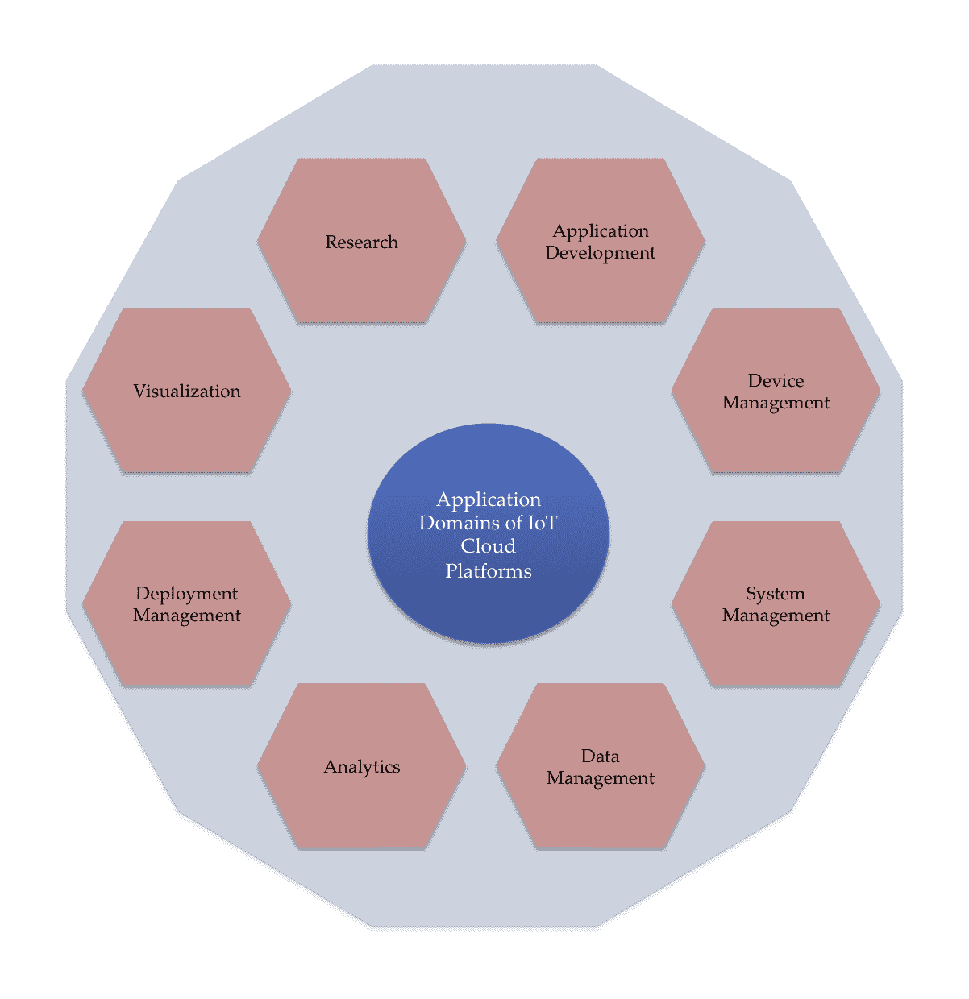

恭喜你购买了这本书；这表明你对让自己跟上最新的技术进步非常感兴趣。本书论述了当前商业场景中的三大趋势，物联网 ( IoT )、大数据、人工智能 ( AI )。连接到互联网的设备数量的指数级增长，以及它们创建的数据量的指数级增长，使得使用人工智能和深度学习 ( DL )的分析和预测技术成为必要。这本书专门针对第三个组成部分，即针对物联网产生的大数据，在 AI 领域可用的各种分析和预测方法或模型。
这一章将向你简要介绍这三种趋势，并详述它们是如何相互依存的。物联网设备生成的数据被上传到云端，因此您还将了解各种物联网云平台及其提供的数据服务。
本章将涵盖以下几点:
物联网一词是 Kevin Ashton 在 1999 年创造的。那时，输入计算机的大部分数据都是由人类生成的；他提出，最好的方法是让计算机直接获取数据，不需要人类的任何干预。因此，他提出了 RFID 和传感器等收集数据的东西，应该连接到网络，并直接馈送到计算机。
你可以在这里阅读阿什顿谈到他所说的物联网的完整文章:http://www . it rco . jp/libraries/RFID journal-That % 20 internet % 20 of % 20 things % 20 things . pdf。
今天，物联网(也称为万物互联，有时也称为雾网)指的是连接到互联网的传感器、执行器和智能手机等广泛的事物。这些东西可以是任何东西:一个拥有可穿戴设备(甚至是手机)的人，一个贴有 RFID 标签的动物，甚至是我们的日常设备，如冰箱、洗衣机，甚至是咖啡机。这些事物可以是物理事物，即存在于物理世界中并可以被感知、驱动和连接的事物，也可以是信息世界(虚拟事物)，即不是有形存在的事物，而是作为信息(数据)存在并可以被存储、处理和访问的事物。这些东西必然具有与互联网直接沟通的能力；可选地，它们可能具有感测、驱动、数据捕获、数据存储和数据处理的潜力。
联合国机构国际电信组织 ( ITU )将物联网定义为:
“信息社会的全球基础设施，基于现有的和不断发展的可互操作的信息和通信技术，通过互连(物理和虚拟)事物来实现高级服务。”
你可以在 https://www.itu.int/en/ITU-T/gsi/iot/Pages/default.aspx 了解更多信息。
广阔的 ICT 已经为我们提供了随时随地的沟通；物联网增加了任何事物通信的新维度:
物联网引入新维度(改编自 b-ITU-T Y.2060 报告)
据预测，物联网作为一项技术将对我们生活的人类和社会产生深远的影响。为了让您对其深远影响有所了解，请考虑以下场景:
选择只受你想象力的限制。前面两个场景对应于消费者物联网，即侧重于面向消费者的应用的物联网。还存在大范围的行业物联网 ( IIoT )，其中制造商和行业优化流程并实施远程监控功能，以提高生产率和效率。在本书中，您将找到这两种物联网应用的实践经验。
就像互联网的 OSI 参考模型一样，物联网架构是通过六层定义的:四个水平层和两个垂直层。两个垂直层是管理和安全，它们遍布所有四个水平层，如下图所示:

物联网层
设备层:在堆栈的底部，我们有设备层，也称为感知层。这一层包含了感知或控制物理世界和获取数据(即通过感知物理世界)所需的物理事物。传感器、RFID 和执行器等现有硬件构成了感知层。
网络层:该层通过有线或无线网络提供网络支持和数据传输。该层将信息从设备层中的设备安全地传输到信息处理系统。传输介质 和 技术都属于网络层。例子包括 3G、UMTS、ZigBee、蓝牙、Wi-Fi 等等。
服务层:该层负责服务管理。它从网络层接收信息，将其存储到数据库中，处理该信息，并可以根据结果做出自动决策。
应用层:该层根据服务层中处理的信息管理应用程序。物联网可以实现广泛的应用:智能城市、智能农业和智能家居等等。
来自网络层的信息通常借助物联网平台进行管理。如今，许多公司都提供物联网平台服务，它们不仅帮助处理数据，还支持与不同硬件的无缝集成。由于物联网平台充当硬件和应用层之间的中介，因此也称为物联网中间件，是物联网参考堆栈中服务层的一部分。物联网平台提供了与世界任何地方的事物连接和通信的能力。在本书中，我们将简要介绍一些流行的物联网平台，如谷歌云平台、Azure 物联网、亚马逊 AWS 物联网、Predix 和 H2O。
您可以根据以下标准选择最适合您的物联网平台:
纵向市场是这样一个市场，其中供应商提供特定于某个行业、贸易、专业或其他有特殊需求的客户群的商品和服务。物联网使许多此类垂直行业成为可能，一些顶级物联网垂直行业如下:
我们将在本书中介绍其中的一些作为案例研究。本书的内容侧重于信息处理和在物联网上实施的应用，因此我们不再深入讨论物联网参考堆栈中涉及的设备、架构和协议的细节。
感兴趣的读者可以参考以下参考资料，了解更多关于物联网架构和不同协议的信息:
物联网连接了以前从未连接到互联网的事物，如汽车发动机，导致大量连续数据流的产生。下面的屏幕截图显示了 IHS 对未来几年数十亿台联网设备数量的探索性数据。他们的估计显示，到 2025 年，物联网设备的数量将达到 754.4 亿:
对 2025 年物联网设备增长的预测
IHS 的白皮书《物联网平台:实现物联网》全文可从 https://cdn.ihs.com/www/pdf/enabling-IOT.pdf获得。
传感器成本的降低、高效的功耗技术、大范围的连接(红外、NFC、蓝牙、Wi-Fi 等)以及支持物联网部署和开发的云平台的可用性是物联网在我们的家庭、个人生活和行业中普及的主要原因。这也促使公司考虑提供新的服务和开发新的商业模式。一些例子包括如下:
在此过程中生成的数据量既庞大又复杂，因此需要大数据。大数据方法和物联网几乎是天生一对；两者协同工作。
事物不断产生大量的数据流，提供它们的状态，如温度、污染程度、地理位置和邻近度。生成的数据是时间序列格式，并且是自相关的。这项任务变得很有挑战性，因为数据本质上是动态的。此外，可以在边缘(传感器或网关)或云上分析生成的数据。在将数据发送到云之前，会执行某种形式的物联网数据转换。这可能涉及以下内容:
在边缘，复杂事件处理 ( CEP )用于组合来自多个来源的数据并推断事件或模式。
使用流分析来分析数据，例如，将分析工具应用于数据流，但开发离线模式下外部使用的洞察力和规则。模型是离线构建的，然后应用于生成的数据流。数据可以用不同的方式处理:
流分析可以与 CEP 相结合，以组合一段时间内的事件，并关联模式以检测特殊模式(例如，异常或故障)。
数据科学家和机器学习工程师中非常流行的一句话是“人工智能是新的电力”
吴恩达教授在 NIPS 2017 中说的，我们可以扩展如下:如果人工智能是新的电力，数据是新的煤炭，物联网是新的煤矿。
物联网产生海量数据；目前，生成的数据中有 90%甚至没有被捕获，而在捕获的 10%中，大部分是时间相关的，在几毫秒内就会失去其价值。持续手动监控这些数据既麻烦又昂贵。这就需要一种方法来智能地分析这些数据并从中获得洞察力；人工智能的工具和模型为我们提供了一种在最少人工干预的情况下做到这一点的方法。这本书的主要重点将是理解可以应用于物联网数据的各种人工智能模型和技术。我们将同时使用机器学习 ( ML )和 DL 算法。以下截图解释了人工智能、机器学习、深度学习的关系:

AI、ML 和 DL
通过观察多个事物的行为，物联网(借助大数据和人工智能)旨在洞察数据并优化底层流程。这涉及到多重挑战:
对于物联网问题，最常用的数据管理 ( DM )方法是由 Chapman 等人提出的 c 跨行业数据挖掘标准流程 ( CRISP-DM )。这是一个陈述成功完成 DM 需要执行的任务的流程模型。这是一种独立于供应商的方法，分为以下六个不同的阶段:
下图显示了不同的阶段:

CRISP-DM 的不同阶段
正如我们所见，这是一个持续的流程模型，数据科学和人工智能在第 2-5 步中扮演着重要角色。
有关 CRISP-DM 及其所有阶段的详细信息，请参阅以下内容:
如今有大量兼具人工智能和物联网功能的云平台。这些平台能够集成传感器和设备，并在云上执行分析。全球市场上有 30 多个云平台，每个平台针对不同的物联网垂直行业和服务。以下截图列出了 AI/IoT 平台支持的各种服务:

不同人工智能/物联网平台支持的服务
下面我们简单了解一下一些流行的云平台。在第 12 章中，我们将学习如何使用最流行的。以下是一些流行的云平台列表:
对于基于物联网的服务的实施，我们需要遵循自下而上的方法。对于每个物联网垂直行业，我们需要找到分析和数据，并最终用代码实现它。
由于 Python 在几乎所有人工智能和物联网平台中的可用性，它将在本书中用于编码。除了 Python，一些有帮助的库如 NumPy、pandas、SciPy、Keras 和 TensorFlow 将用于对数据执行 AI/ML 分析。为了可视化，我们将使用 Matplotlib 和 Seaborn。
TensorFlow 是 Google Brain 团队开发的开源软件库；它具有用于实现深度神经网络的函数和 API。它适用于 Python、C++、Java、R 和 Go。它可以用于在多个平台上工作，CPU，GPU，移动，甚至分布式。TensorFlow 允许在生产中部署模型并易于使用。TensorFlow 中的优化器通过自动计算梯度并应用它们来更新权重和偏差，使训练深度神经网络的任务变得更容易。
在 TensorFlow 中，程序有两个不同的组成部分:
让我们看看在 TensorFlow 中执行矩阵乘法的代码。整个代码可以从 GitHub 存储库(https://GitHub . com/packt publishing/Hands-On-Artificial-Intelligence-for-IoT)文件名，matrix_multiplication.ipynb:
import tensorflow as tf
import numpy as np
这部分导入 TensorFlow 模块。接下来，我们定义计算图。mat1和mat2是我们需要相乘的两个矩阵:
# A random matrix of size [3,5]
mat1 = np.random.rand(3,5)
# A random matrix of size [5,2]
mat2 = np.random.rand(5,2)
我们声明了两个占位符，A和B，这样我们就可以在运行时传递它们的值。在计算图中，我们声明了所有的数据和计算对象:
# Declare placeholders for the two matrices
A = tf.placeholder(tf.float32, None, name='A')
B = tf.placeholder(tf.float32, None, name='B')
这声明了两个名为A和B的占位符；tf.placeholder方法的参数指定占位符的数据类型为float32。由于指定的形状是None，我们可以给它一个任意形状的张量和一个可选的操作名称。接下来，我们使用矩阵乘法方法tf.matmul定义要执行的操作:
C = tf.matmul(A,B)
执行图被声明为一个Session对象，为其提供两个矩阵mat1和mat2，分别用于占位符A和B:
with tf.Session() as sess:
result = sess.run(C, feed_dict={A: mat1, B:mat2})
print(result)
Keras 是运行在 TensorFlow 之上的高级 API。它允许快速简单的原型制作。它支持卷积和递归神经网络，甚至两者的组合。它可以在 CPU 和 GPU 上运行。以下代码使用 Keras 执行矩阵乘法:
# Import the libraries
import keras.backend as K
import numpy as np
# Declare the data
A = np.random.rand(20,500)
B = np.random.rand(500,3000)
#Create Variable
x = K.variable(value=A)
y = K.variable(value=B)
z = K.dot(x,y)
print(K.eval(z))
在接下来的章节中，我们将学习不同的 DL 模型和 ML 方法。他们都处理数据；虽然有大量数据集可用于演示这些模型如何工作，但在本书中，我们将通过无线传感器和其他物联网设备免费使用数据集。以下是本书中使用的一些数据集及其来源。
该数据集包含从一个联合循环发电厂 ( CCPP )在六年期间(2006-2011)收集的 9568 个数据点。CCPP 使用两种涡轮机发电，燃气涡轮机和蒸汽涡轮机。CCPP 工厂有三个主要组成部分:燃气轮机、热回收系统和蒸汽轮机。该数据集可在 UCI ML(http://archive . ics . UCI . edu/ML/datasets/combined+cycle+power+plant)获得，由 Namik Kemal 大学的 Pinar Tufekci 和 Bogazici 大学的 Heysem Kaya 收集。该数据由决定平均环境变量的四个特征组成。平均值取自位于工厂周围的各种传感器，这些传感器每秒记录环境变量。目的是预测每小时净电能输出。数据有xls和ods两种格式。
数据集中的要素如下:
关于数据和问题的更多细节可从以下内容中阅读:
世界各地的葡萄酒酿造厂必须接受葡萄酒认证和质量评估，以保障人类健康。葡萄酒认证是在理化分析和感官测试的帮助下进行的。随着技术的进步，可以通过体外设备进行常规的理化分析。
在本书中，我们使用该数据集作为分类示例。数据集可以从 https://archive.ics.uci.edu/ml/datasets/Wine+Quality 的 UCI-ML 知识库下载。葡萄酒质量数据集包含不同红葡萄酒和白葡萄酒样品的理化测试结果。每一个样品都由专业品酒师按照 0-10 的等级进一步评定质量。
数据集总共包含 4，898 个实例；它总共有 12 个属性。这 12 个属性如下:
数据集以 CSV 格式提供。
关于数据集的细节可以从这篇论文中读到:Cortez，Paulo，et al. 通过从物理化学性质中进行数据挖掘对葡萄酒偏好进行建模。决策支持系统 47.4(2009):547-553(https://repository . sdum . uminho . pt/bitstream/1822/10029/1/wine 5 . pdf)。
空气污染对人类健康构成了重大的环境风险。人们发现，改善空气质量与改善各种健康问题(如呼吸道感染、心血管疾病和肺癌)之间存在关联。各个国家的气象组织在世界各地建立了广泛的传感器网络，为我们提供实时空气质量数据。可以通过这些组织各自的 web APIs 访问这些数据。
在本书中，我们将使用历史空气质量数据来训练我们的网络并预测死亡率。英国的历史数据可以在 ka ggle(https://www . ka ggle . com/c/predict-impact-of-air-quality-on-death-rates)上免费获得，空气质量数据包括臭氧 ( O3 )、二氧化氮 ( NO2 )、直径小于或等于 10 微米的颗粒物(PM10)和 PM25 (2.5 微米或更小)以及温度的日均值。英格兰地区的死亡率(每 100，000 人的死亡人数)由英国国家统计局提供的数据获得。
在这一章中，我们学习了物联网、大数据和人工智能。本章介绍了物联网中使用的常用术语。我们了解了用于数据管理和数据分析的物联网架构。物联网设备生成的大量数据需要特殊的方法来处理。
我们了解了数据科学和人工智能如何帮助许多物联网设备产生的分析和预测。本章简要介绍了各种物联网平台，以及一些流行的物联网垂直行业。我们还学习了特殊的 DL 库:TensorFlow 和 Keras。最后，介绍了我们将在整本书中使用的一些数据集。
下一章将介绍如何访问各种格式的数据集。